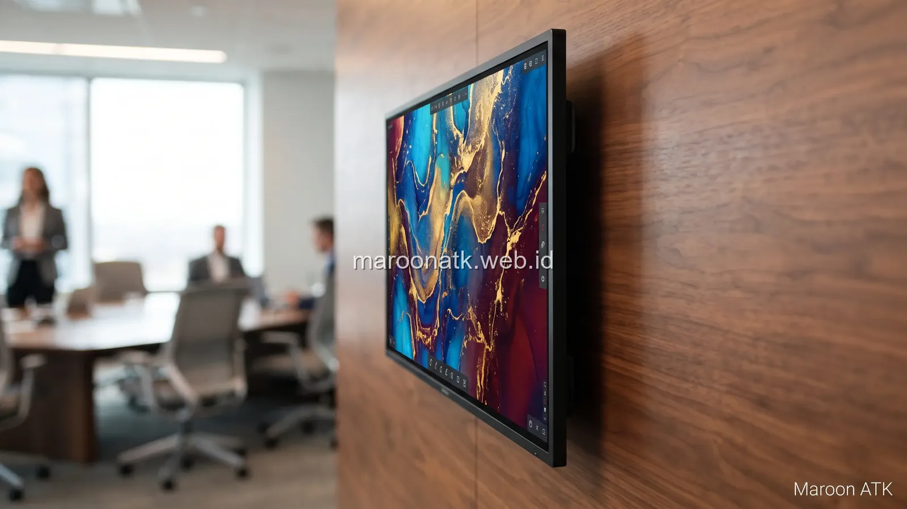

Kriteria Memilih Distributor Smart Board Jakarta yang Tepat
Jawaban singkat: Memilih distributor smart board Jakarta tidak cukup hanya berdasarkan harga perangkat. Periksa juga dukungan after-sales seperti ketentuan garansi resmi, akses bantuan teknisi lokal, layanan instalasi on-site, prosedur troubleshooting, ketersediaan komponen suku cadang, dan orientasi penggunaan perangkat. Untuk pengadaan B2B korporat, pastikan pula distributor dapat menyediakan dokumen transaksi lengkap seperti SPH dan e-Faktur PPN sebelum PO diterbitkan.
Pengadaan teknologi display interaktif seperti Smart Board atau Interactive Flat Panel (IFP) kini menjadi prioritas bagi banyak perusahaan, universitas, sekolah internasional, hingga instansi pemerintah di Jakarta. Perangkat ini menggantikan fungsi proyektor konvensional dan papan tulis putih dengan layar sentuh 4K berfitur multi-touch, wireless screen sharing, dan kemampuan video conference terintegrasi.
Namun, dalam praktiknya, kekhawatiran terbesar bagi Procurement Officer maupun Head of IT bukanlah saat membeli perangkat, melainkan apa yang terjadi 6 hingga 12 bulan setelahnya: bagaimana jika panel sentuh mengalami glitch, modul OPS Windows tidak merespons, atau kabel konektor dinding bermasalah, sementara vendor tidak memiliki teknisi yang dapat hadir ke kantor? Oleh karena itu, memilih distributor yang memiliki kesiapan layanan purna jual (after-sales support) adalah keputusan investasi yang sangat strategis.

Perbedaan Smart Board dan Proyektor Biasa untuk Ruang Meeting Modern
Komparasi tingkat kecerahan, interaktivitas, biaya lampu, dan efisiensi ruang rapat.
1. Mengapa After-Sales Support Begitu Penting pada Perangkat Display Interaktif?
Berbeda dengan pengadaan furniture meja atau alat tulis kantor biasa, Smart Board merupakan perangkat komposit berteknologi tinggi. Kegagalan operasional pada satu komponen saja dapat mengganggu jalannya rapat direksi atau presentasi tender penting.
Beberapa risiko yang sering timbul jika membeli dari penjual yang tidak memiliki dukungan teknis terkelola antara lain:
- Ketiadaan Jasa Kalibrasi dan Setting Awal: Perangkat hanya dikirim dalam kardus tanpa jasa pemasangan bracket dinding yang aman atau konfigurasi jaringan LAN kantor.
- Proses Klaim Garansi Berbelit: Klien diminta mengirim sendiri unit layar berukuran 65 hingga 86 inci ke luar kota tanpa adanya bantuan teknisi on-site.
- Kurangnya Pelatihan Pengguna (User Training): Karyawan atau pengajar tidak memahami fitur anotasi digital dan screen casting nirkabel, sehingga perangkat berharga mahal berakhir hanya menjadi televisi display pasif.

Kelengkapan instalasi mounting, manajemen kabel yang rapi, dan uji fungsi perangkat merupakan bagian dari standar serah terima pekerjaan.

Apa Itu Interactive Flat Panel (IFP) dan Manfaatnya bagi Kolaborasi Kerja
Penjelasan sistem operasi ganda Android/OPS Windows, resolusi 4K, dan fitur digital whiteboard.
2. Elemen Konkret Dukungan After-Sales yang Wajib Dikonfirmasi
Jangan hanya tergiur dengan klaim verbal "layanan purna jual terbaik". Procurement perlu membedah komponen layanan tersebut secara konkret sesuai model yang dipilih:
- Klausul Garansi Resmi: Pastikan garansi mencakup panel LED, motherboard, touch frame, dan power board. Tanyakan apakah garansi berlaku on-site di wilayah Jabodetabek.
- Instalasi Fisik & Wall Mounting: Pemasangan layar berbobot 40–80 kg membutuhkan bracket baja yang sesuai standar VESA serta pengetesan kekuatan dinding gypsum/beton.
- Sesi Orientasi & Training Singkat: Distributor yang profesional menyediakan sesi panduan penggunaan dasar bagi tim internal atau divisi IT perusahaan.
- Ketersediaan Aksesori & Stylus: Kemudahan memesan kembali pena stylus magnetic, remote control, atau dongle USB wireless sharing saat terjadi kehilangan.
Tabel Checklist Evaluasi Distributor Smart Board
Gunakan matriks perbandingan berikut untuk mengevaluasi beberapa calon distributor sebelum mengambil keputusan final:
| Aspek Evaluasi | Kriteria yang Diharapkan | Dampak bagi Perusahaan |
|---|---|---|
| Legalitas & Dokumen | Badan usaha resmi, SPH berkop perusahaan, e-Faktur PPN 11% | Keamanan transaksi audit keuangan dan kepatuhan perpajakan |
| Demo Unit Fisik | Tersedia unit display untuk dicoba langsung fitur sentuh dan kecerahannya | Memastikan spesifikasi sesuai dengan ukuran ruang meeting sebelum order |
| Dukungan Instalasi | Teknisi memasang bracket dinding/mobile stand dan manajemen jalur kabel | Menghindari risiko kerusakan fisik layar akibat kesalahan pemasangan mandiri |
| Jalur Komunikasi Teknis | Memiliki kontak helpdesk atau PIC teknis yang jelas untuk bantuan troubleshooting | Mempercepat penanganan kendala operasional harian |

Kriteria Memilih Jasa Vendor Videotron LED & Display Jakarta
Tahapan perencanaan pixel pitch, bracket konstruksi, dan uji dead pixel pada layar format besar.
Pertanyaan Umum (FAQ) Distributor Smart Board
Pertanyaan penting meliputi: cakupan dan durasi garansi resmi (apakah panel dan motherboard tercover), ketersediaan tim teknisi untuk instalasi onsite di Jakarta, prosedur klaim kerusakan, ketersediaan unit demo, serta kelengkapan dokumen perpajakan resmi (e-Faktur PPN).
Smart Board dan Interactive Flat Panel adalah perangkat teknologi komposit yang menggabungkan layar sentuh 4K, sistem operasi (Android/Windows OPS), dan konektivitas nirkabel. Jika terjadi kendala operasional, ketiadaan dukungan teknis lokal berisiko menghentikan kegiatan rapat penting atau proses belajar-mengajar.
Tidak semua vendor memiliki teknisi internal bersertifikasi di Jakarta. Sebagian penjual hanya bertindak sebagai reseller lepas (trader). Calon pembeli wajib mengonfirmasi ketersediaan teknisi atau service partner resmi sebelum menerbitkan Purchase Order (PO).
Periksa apakah garansi bersifat on-site service (teknisi datang ke lokasi) atau carry-in (klien harus mengirim unit ke service center), batas toleransi dead pixel, pengecualian garansi akibat lonjakan tegangan listrik, dan jaminan ketersediaan suku cadang (spare parts).
Tidak. Menilai pengadaan teknologi hanya dari harga awal terendah sering memicu biaya tersembunyi (hidden cost) di masa depan apabila vendor tidak menyediakan jasa pemasangan bracket, training pengguna, atau sulit dihubungi saat terjadi kerusakan teknis.

Arby Ardiansyah
Arby Ardiansyah mengulas solusi integrasi teknologi ruang rapat modern, pengadaan perangkat interaktif, dan manajemen pengadaan sarana korporat di Indonesia bersama MAROON ATK.